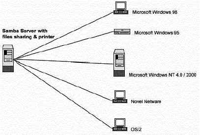

Глава 21 Серверное программное обеспечение (Файловый сервис) -
SambaВ этой главе
Linux Samba
сервер
Конфигурации
Создание файла
с шифрованными паролями для пользователей
Организация
защиты Samba
Оптимизация
Samba
Административные
средства Samba
Утилиты
пользователя Samba
Linux FTP
сервер
Настройка
бюджета пользователя FTP без shell-а
Настройка
окружения пользователя под chroot
Конфигурации
Настройка
ftpd для использования с TCP-Wrappers inetd супер сервером
Административные
средства FTP
Организация
защиты FTP
|
 |
Краткий обзор
Крупные организации часто используют много разных операционных
систем, и им нужно объединять их в сеть для совместного использования файлов и
принтеров. Работники могут работать на рабочих станциях Linux, Microsoft Windows
95/98/NT, OS/2 или Novel и им необходим доступ к серверам для повседневной
работы. Linux сервер с поддержкой Samba может быть использован для этих
целей.
Samba это надежный сетевой сервис для организации совместного
использования файлов и принтеров, который работает на большинстве операционных
систем доступных сегодня. Когда он хорошо настроен администратором, это более
быстрый и безопасный файловый сервис, чем "родная" реализация на машинах
Microsoft Windows.
Как описано в файле README для Samba:
Samba - это протокол, при помощи которого на большинстве
PC-машинах совместно используются файлы, принтеры и другая информация, такая как
списки доступных файлов и принтеров. Встроенную поддержку этого протокола имеют
Windows 95/98/NT, OS/2 и Linux, а с помощью дополнительного пакета DOS, Windows,
VMS, Unix всех других видов, MVS и многие другие. Apple Macs и некоторые Веб
Броузеры также понимают его. Альтернативу SMB составляют Netware, NFS,
AppleTalk, Banyan Vines, Decnet и др.; многие из них имеют большие возможности,
но ни один не имеет общедоступной спецификации и широкой реализации на
настольных машинах. Программное обеспечение Samba включает SMB сервер,
предоставляющий файловый и принтерный сервис в стиле Windows NT и LAN Manager
SMB клиентам (Windows 95, Warp Server, smbfs и др), NetBIOS (rfc1001/1002)
сервер имен, который среди многих других вещей, дает возможность ftp-подобного
просмотра ресурсов (дисков и принтеров) из Unix, Netware и других ОС, и
расширение tar для клиентов для резервного копирования PC.

Эти инструкции предполагают.
Unix-совместимые
команды.
Путь к исходным кодам "/var/tmp" (возможны другие
варианты).
Инсталляция была проверена на Red Hat Linux 6.1 и 6.2.
Все шаги
инсталляции осуществляются суперпользователем "root".
Samba версии
2.0.7
Пакеты.
Домашняя страница Samba: http://us1.samba.org/samba/samba.html
FTP сервер Samba: 63.238.153.11
Вы должны
скачать: samba-2.0.7.tar.gz
Тарболы.
Хорошей идеей будет создать список файлов
установленных в вашей системе до инсталляции Samba и после, в результате, с
помощью утилиты diff вы сможете узнать какие файлы были установлены.
Например,
До инсталляции:
find /* >
Samba1
После инсталляции:
find /* >
Samba2
Для получения списка установленных файлов:
diff Samba1 Samba2 > Samba-Installed
Раскройте тарбол:
[root@deep /]#
cp samba-version.tar.gz /var/tmp
[root@deep /]# cd /var/tmp
[root@deep
tmp]# tar xzpf samba-version.tar.gz
Конфигурирование
Перейдите в каталог Samba, а затем в подкаталог
"source".
Шаг 1
Редактируйте файл smbsh.in (vi +3 smbwrapper/smbsh.in) и
измените строку:
SMBW_LIBDIR=${SMBW_LIBDIR-@builddir@/smbwrapper}
на:
SMBW_LIBDIR=${SMBW_LIBDIR-/usr/bin}
Это изменит месторасположение каталога "lib" Samba под каталог
"/usr/bin".
Шаг 2
Редактируйте файл Makefile.in (vi +28 Makefile.in) и измените
строки:
SBINDIR =
@bindir@
На:
SBINDIR =
@sbindir@
VARDIR =
@localstadir@
на:
VARDIR =
/var/log/samba
Эти изменения определяет каталог "/usr/sbin" для двоичных
файлов Samba, и каталог "/var" для файлов регистраций Samba
("/var/log/samba").
Шаг 3
Редактируйте файл convert_smbpasswd (vi +10
script/convert_smbpasswd) и измените строку:
nawk 'BEGIN
{FS=":"}
на:
gawk 'BEGIN
{FS=":"}
Это изменение определит использование версии GNU Linux утилиты
обработки текста awk, основанной на Bell Labs research версии программы awk для
программы "smbpasswd".
Шаг 4
Редактируйте файл smbmount.c file (vi +98 client/smbmount.c) и
измените строку:
static void close_our_files(int client_fd)
{
int i;
for (i = 0; i < 256; i++) {
if (i == client_fd) continue;
close(i);
}на:
static void close_our_files(int client_fd)
{
struct rlimit limits;
int i;
getrlimit(RLIMIT_NOFILE,&limits);
for (i = 0; i < limits.rlim_max; i++) {
if (i == client_fd) continue;
close(i);
}
Этот шаг сделает файл smbmount.c совместимым с библиотекой Red
Hat's glibc 2.1.
Компиляция и оптимизация
Шаг 1
Введите следующие команды на вашем терминале:
CC="egcs" \
./configure \
--prefix=/usr
\
--libdir=/etc \
--with-lockdir=/var/lock/samba
\
--with-privatedir=/etc \
--with-swatdir=/usr/share/swat \
--with-pam
\
--with-mmap \
--without-sambabook
ЗАМЕЧАНИЕ Опция "--with-mmap" может улучшить
производительность на некоторых машинах, на других ничего не изменится, ну а на
третьих она может упасть.
Эти опции говорят Samba:
- Включить поддержку базы данных PAM паролей, поддерживаемых для лучшей
безопасности.
- Включить экспериментальную поддержку MMAP для улучшения производительности
Samba.
- Не инсталлируйте книги, поставляемые с дистрибутивом Samba.
Шаг
2
Сейчас мы должны инсталлировать Samba на нашем Linux
сервере:
[root@deep source]# make
all
[root@deep source]# make install
[root@deep source]# install -m 755
script/mksmbpasswd.sh /usr/bin/
[root@deep source]# rm -rf
/usr/share/swat/ (если вы мне позволите совет, не позволяйте
пользователям настраивать Samba через броузер).
[root@deep source]# rm -f /usr/sbin/swat
[root@deep source]# rm -f
/usr/man/man8/swat.8
[root@deep source]# mkdir -p
/var/lock/samba
[root@deep source]# mkdir -p /var/spool/samba
(требуется только если вы планируете совместное использование
принтера).
[root@deep source]# chmod 1777
/var/spool/samba/ (требуется только если вы планируете совместное
использование принтера).
Команда "install" инсталлирует скрипт "mksmbpasswd.sh" в
каталог "/usr/bin/". Этот скрипт нужен, чтобы пользователи Samba могли
подключаться к серверу, используя файл "smbpasswd". О том как использовать
пароли Samba читайте дальше в этой книге.
Команда "rm" удалит каталог "/usr/share/swat" и все файлы в
нем, также она удалит исполняемый файл "swat" из каталога "/usr/sbin/". SWAT -
это конфигурационная утилита имеющая веб интерфейс, которая позволяет
настраивать файл "smb.conf" из веб броузера. Она может открыть брешь в
безопасности вашего сервера, поэтому я рекомендую удалить ее. Команда "mkdir"
создаст каталог "/var/spool/samba/", который используется при печати на
принтере. Конечно, он необходим, если вы планируете использовать Samba для
предоставление принтера в совместное использование. Так как мы не настраиваем
наш сервер Samba на предоставление сервиса печати, нам не нужен этот каталог
("/var/spool/samba/"), и соответственно нет необходимости в команде "chmod",
устанавливающей "sticky" бит в "/var/spool/samba", чтобы только владелец файла
мог удалить его из каталога.
Очистка после работы.[root@deep /]# cd /var/tmp
[root@deep tmp]# rm -rf
samba-version/ samba-version.tar.gz
Команды "rm" будет удалять все файлы с исходными кодами,
которые мы использовали при компиляции и инсталляции Samba. Также будет удален
сжатый архив Samba из каталога "/var/tmp".
Конфигурационный файл для разных сервисов очень специфичен и
сильно зависит от того, что вам нужно. Некоторые хотят инсталлировать сервер
Samba, рассчитывая на одно клиентское соединение, а некоторые на тысячу. Все
программное обеспечение, описанное в книге, имеет определенный каталог и
подкаталог в архиве "floppy.tgz", включающей все конфигурационные файлы для всех
программ. Если вы скачаете этот файл, то вам не нужно будет вручную
воспроизводить файлы из книги, чтобы создать свои файлы конфигурации. Скопируйте
файлы связанные с Samba из архива, измените их под свои требования и поместите в
нужное место так, как это описано ниже. Файл с конфигурациями вы можете скачать
с адреса: http://www.openna.com/books/floppy.tgz
Для запуска веб сервера Apache следующие файлы должны быть
созданы или скопированы на ваш сервер.
Копируйте файлы smb.conf и lmhosts в каталог
"/etc/".
Копируйте smb в каталог "/etc/rc.d/init.d/".
Копируйте samba в
каталог "/etc/logrotate.d/".
Копируйте samba в каталог "/etc/pam.d/".
Вы можете взять эти файлы из нашего архива floppy.tgz.
Конфигурационный файл "/etc/smb.conf"
Файл "/etc/smb.conf" - это основной конфигурационный файл
сервера Samba, в котором вы можете определить каталоги к которым предоставляете
доступ, с каких IP адресов разрешен доступ и пр. Первые несколько строк в секции
[global] содержат глобальные конфигурационные директивы, которые являются общими
для всех разделяемых ресурсов (пока они не переписаны в конкретных секциях для
каждого ресурса), далее идут секции, отвечающие за конкретные ресурсы.
Существует множество опций, и нужно обязательно прочитать документацию,
поставляемую вместе с Samba, чтобы получить информацию о каждой из них.
Следующий пример представляет из себя минимальную рабочую
конфигурацию для Samba с поддержкой шифрованных паролей. Также, замечу, что мы
прокомментируем только те параметры, которые связаны с безопасностью и
оптимизацией, а остальные оставим для вашего собственного изучения.
В нашем примере, мы создаем только один каталог, "[tmp]", и
позволяем доступ только машинам с IP адресами диапазона класса C. Также мы не
используем сервис печати.
Редактируйте файл smb.conf (vi /etc/smb.conf) и
добавьте/измените следующие параметры:
[global]
workgroup = OPENNA
server string = R&D of Open Network Architecture Samba Server
encrypt passwords = True
security = user
smb passwd file = /etc/smbpasswd
log file = /var/log/samba/log.%m
socket options = IPTOS_LOWDELAY TCP_NODELAY
domain master = Yes
local master = Yes
preferred master = Yes
os level = 65
dns proxy = No
name resolve order = lmhosts host bcast
bind interfaces only = True
interfaces = eth0 192.168.1.1
hosts deny = ALL
hosts allow = 192.168.1.4 127.0.0.1
debug level = 1
create mask = 0644
directory mask = 0755
level2 oplocks = True
read raw = no
write cache size = 262144
[homes]
comment = Home Directories
browseable = no
read only = no
invalid users = root bin daemon nobody named sys tty disk mem kmem users
[tmp]
comment = Temporary File Space
path = /tmp
read only = No
valid users = admin
invalid users = root bin daemon nobody named sys tty disk mem kmem users
Эта опции говорят Samba следующее:
[global]
workgroup = OPENNA
Опция "workgroup" определяет
рабочую группу в которую входит ваш сервер. Важно, чтобы клиенты и сервер
входили в одну и туже группу.
server string = R&D of Open Network Architecture Samba
Server
Опция "server string" определяет строку, которую получат
пользователи в блоке комментария к принтеру в менеджере принтеров, или при IPC
соединении по команде "net view" на Windows машинах.
encrypt passwords = True
Опция "encrypt passwords"
если установлена в "True" инструктирует Samba использовать шифрованные пароли
вместо паролей с открытым текстом. Снифферы несмогут определить ваш пароль, если
он зашифрован. Эту опцию из соображений безопасности нужно установить в
"True".
security = user
Опция "security", если установлена в
"user", определяет, что клиент должен вначале пройти аутентификацию по
правильному имени и паролю, или соединение будет разорвано. При этом способе имя
пользователя и пароль должно существовать в файле "/etc/passwd" Linux сервера и
в файле "/etc/smbpasswd" Samba сервера, или соединение с клиентом не состоится.
Смотрите "Безопасность samba" в этой главе для получения большей информации о
файле "smbpasswd".
smb passwd file = /etc/smbpasswd
Опция "smb passwd
file" определяет путь к файлу с шифрованными паролями "smbpasswd". Файл
"smbpasswd" это копия файла "/etc/passwd" Linux системы содержащий разрешенные
имена и пароли клиентов, которым разрешен доступ к серверу Samba. Samba читает
этот файл, когда получает запрос на соединение.
log file = /var/log/samba/log.%m
Опция "log file"
определяет месторасположение и имена файлов регистрации Samba. С расширением
"%m", у вас будут создаваться независимые файлы регистрации для каждого
пользователя или машины, соединяющихся к вашему Samba серверу (например,
log.machine1).
socket options = IPTOS_LOWDELAY TCP_NODELAY
Опция
"socket options" определяет параметры, которые вы можете включить в вашу
конфигурацию Samba для настройки и улучшения сервера samba на оптимальную
производительность. По умолчанию, мы выбрали настройку сервера на локальную сеть
и улучшили производительность сервера Samba при пересылке файлов.
domain master = Yes
Опция "domain master" определяет,
что один из демонов Samba, "nmbd", будет установлен как домен мастер броузер для
данной рабочей группы. Эта опция обычно устанавливается в "Yes" только на одном
сервере Samba в некоторой сети и рабочей группе.
local master = Yes
Опция "local master" позволяет
"nmbd" становится локальным мастер броузером в подсети. Подобно предыдущей опции
эта опция должна быть установлена в "Yes" только на одном Samba сервере в
подсети.
preferred master = Yes
Опция "preferred master"
определяет и контролирует является ли "nmbd" привилегированным (preferred)
мастер броузером рабочей группы. Опять же, эта опция обычно выставляется в "Yes"
на одном сервере на вашей сети.
os level = 65
Опция "os level" определяет значение
имеет ли "nmbd" шанс стать локальным мастер броузером для рабочей группы в
локальной широковещательной области. Число 65 позволит победить любой NT сервер.
Если в вашей сети есть NT сервер и вы хотите, чтобы Linux Samba сервер стал
локальным мастер броузером, вы должны установить этот параметр равным 65. Эта
опция должна быть определена только на одном Linux Samba сервере в сети, а на
остальных ее надо отключить.
dns proxy = No
Опция "dns proxy" если установлена в
"Yes" определяет, что "nmbd" когда выступает как WINS сервер и определяет, что
Net BIOS имя не было зарегистрировано, должен интерпретировать Net BIOS имя
слово в слово как DNS имя и делает lookup на DNS сервер действуя от имени
клиента, запрашивающего данное имя. Так как мы не настраиваем Samba сервер как
WINS сервер, нам не нужно устанавливать эту опцию в "Yes". Устанавливая эту
опцию в "Yes" мы ухудшим производительность Samba.
name resolve order = lmhosts host bcast
Опция "name
resolve order" определяет, в каком порядке используются сервисы имен для
резолвинга имени хоста в IP адрес. Параметры, который мы выбрали говорят
использовать в первую очередь локальный "lmhosts" файл.
bind interfaces only = True
Опция "bind interfaces
only" если установлена в "True", позволяет вам ограничивать интерфейсы на
которых будет принимать запросы "smb". Эта возможность улучшающая безопасность
системы. Опция "interfaces = eth0 192.168.1.1" дополняет данную опцию.
interfaces = eth0 192.168.1.1
Опция "interfaces"
позволяет вам переписать список интерфейсов по умолчанию, на которых Samba будет
обрабатывать запросы. По умолчанию, Samba принимает список из всех активных
интерфейсов и любые интерфейсы (исключая 127.0.0.1), на которых поддерживается
возможность широковещательных запросов. С этой опцией, Samba будет слушать
только интерфейс "eth0" с IP адресом 192.168.1.1. Это возможность улучшающая
безопасность, и дополняет ранее приведенную опцию "bind interfaces only =
True".
hosts deny = ALL
Опция "hosts deny" определяет список
хостов, которым запрещен доступ к сервису Samba, если определенные сервисы не
имеют собственных списков доступа. Для простоты, мы запрещаем доступ всем хостам
по умолчанию, и разрешаем доступ некоторым компьютерам в опции "hosts allow =",
приведенной ниже.
hosts allow = 192.168.1.4 127.0.0.1
Опция "hosts
allow" определяет, каким хостам разрешен доступ к Samba сервису. По умолчанию,
мы пускаем компьютер с IP адресом класса C 192.168.1.4 и наш localhost
127.0.0.1. Заметим, что доступ с localhost должен быть всегда разрешен, иначе вы
будете получать сообщения об ошибках.
debug level = 1
Опция "debug level" позволяет вам
определить уровень регистрации. Если вы установите уровень отладки больше чем 2,
то это приведет к падению производительности. Это связано с тем, что сервер
сбрасывает информацию в файл регистрации после каждой операции, которые могут
быть очень интенсивными.
create mask = 0644
Опция "create mask" определяет и
устанавливает нужные права доступа, связывая таким образом режимы DOS с правами
UNIX. С этой опцией установленной в 0644, все файлы копируемые или создаваемые
из Windows систем на Unix будут иметь права доступа 0644.
directory mask = 0755
Опция "directory mask"
определяет и устанавливает режим, который используется для конвертирования DOS
режимов в UNIX режимы, когда создается UNIX каталог. С этой опцией установленной
в 0755, все каталоги копируемые или создаваемые из Windows систем на Unix будут
иметь права доступа 0755.
level2 oplocks = True
Опция "level2 oplocks", если
установлена в "True", увеличит производительность множественного доступа к
файлам, которые обычно не записываются (такие как файлы приложений .EXE).
read raw = no
Опция "read raw" контролирует будет или
нет сервер осуществлять "необработанное" (raw) чтение SMB запросов, когда
пересылает данные клиенту. Заметим, что распределение памяти не использует
операцию "read raw". Таким образом, вы можете обнаружить, что распределение
памяти более эффективно, если вы отключите "read raw", используя параметр "read
raw = no".
write cache size = 262144
Опция "write cache size"
позволяет Samba улучшить производительность систем у которых дисковая подсистема
является узким местом. Значение этой опции определяется в байтах. Значение этой
опции определяется в байтах, следовательно 262,144 представляет 256k кэш на
файл.
[tmp]
comment = Temporary File Space
Опция "comment"
позволяет вам определить комментарии, которые появляются, когда клиент
организует запросы на сервер.
path = /tmp
Опция "path" определяет каталог, в
который пользователю разрешается доступ. В нашем примере, это каталог "tmp".
read only = No
Опция "read only" определяет должен ли
пользователь иметь доступ "только на чтение" или нет. В нашем примере, так как
это конфигурация для каталога "tmp", пользователь может иметь больший доступ,
чем "только на чтение".
valid users = admin
Опция "valid users" определяет
список пользователей, которые могут подключаться к этому сервису. В нашем
примере, только пользователю "admin" разрешен доступ к каталогу "/tmp".
invalid users = root bin daemon nobody named sys tty disk
mem kmem users
Опция "invalid users" определяет список пользователей
которым не разрешается подключаться к этому сервису. Это абсолютно
"параноидальная" проверка, которая гарантирует, что неправильные установки не
нарушат безопасность системы. Рекомендуется, чтобы вы включили в эту строку всех
пользователей, созданных в системе по умолчанию, от имени которых запускаются
демоны на сервере.
Конфигурация файла "/etc/lmhosts"
Настроим файл "/etc/lmhosts". Он содержит соответствия между
Samba Net BIOS именами и IP адресами. По формату, этот файл, подобен
"/etc/hosts", за исключением того, что компоненты имени хоста соответствуют
формату имен Net BIOS.
Создадим файл lmhosts (touch /etc/lmhosts) и внесем в него
клиентские компьютеры:
# Пример Samba файла lmhosts.
#
127.0.0.1 localhost
192.168.1.1 deep
192.168.1.4 win
В нашем примере, lmhots содержит три соответствия между IP и
Net BIOS именами. localhost (127.0.0.1), клиент с именем deep (192.168.1.1) и
клиент с именем win (192.168.1.4).
Конфигурация файла "/etc/pam.d/samba"
Настроим файл "/etc/pam.d/samba" для использования pam
аутентификации. Создайте файл samba (touch /etc/pam.d/samba) и добавьте в него
следующие строки:
Auth required
/lib/security/pam_pwdb.so nullok shadow
Account required
/lib/security/pam_pwdb.so
Конфигурация файла "/etc/logrotate.d/samba"
Сконфигурируем файл "/etc/logrotate.d/samba" на автоматическую
еженедельную ротацию ваших файлов регистрации.
Создайте файл samba (touch
/etc/logrotate.d/samba) и добавьте в него следующие строки:
/var/log/samba/log.nmb {
notifempty
missingok
postrotate
/usr/bin/killall -HUP nmbd
endrotate
}
/var/log/samba/log.smb {
notifempty
missingok
postrotate
/usr/bin/killall -HUP smbd
endrotate
}
В файле "/etc/smbpasswd" хранятся шифрованные пароли Samba. Он
хранит имя пользователя; Unix UID, хешированный пароль SMB, информационный флаг
учетной записи и время последнего изменения пароля. Важно создать этот файл с
паролями и включить в него всех пользователей до того, как они будут
подключаться к вашему серверу Samba. Без этого никто не сможет подключиться к
нему.
Шаг 1
Для создания учетной записи Samba, вы должны, для начала,
завести пользователя Linux. Поэтому, вначале, создайте в файле "/etc/passwd"
всех пользователей, которые должны подключаться к серверу Samba. Добавьте нового
пользователя в файл "/etc/passwd" используя следующую команду:
[root@deep /]# useradd smbclient
Определите пароль для него используя команду:
[root@deep /]# passwd smbclient
Changing password for
user smbclient
New UNIX password:
Retype new UNIX password:
passwd: all
authentication tokens updated successfully
Шаг 2
После того, как вы внесли всех пользователей в файл
"/etc/passwd", вы можете создать файл "smbpasswd", используя "/etc/passwd". Для
этого введите следующую команду:
[root@deep /]#
cat /etc/passwd | mksmbpasswd.sh > /etc/smbpasswd Шаг 3
В заключении, на последнем шаге, мы должны создать бюджет
пользователя в нашем файле "/etc/smbpasswd".
Для создания учетной записи
пользователя Samba используйте команду:
[root@deep /]# smbpasswd -a smbclient (помните, что
"smbclient" должен быть реальным пользователем Linux).
New SMB
password:
Retype new SMB password:
Added user smbclient.
Password
changed for user smbclient.
Шаг 4
Не забудьте изменить права доступа к вашему новому файлу
"smbpasswd" на чтение-запись только для пользователя "root' (0600/-rw-------).
Это делается из соображения безопасности.
[root@deep /]# chmod 600 /etc/smbpasswd
[root@deep /]# testparm
(эта команда проверит файл smb.conf на наличие ошибок).
ЗАМЕЧАНИЕ. Смотрите файл ENCRYPTION.txt, находящийся в
дистрибутиве Samba в каталоге /doc/texts/ для большей информации.
Конфигурация скрипта "/etc/rc.d/init.d/smb"
Настроим скрипт "/etc/rc.d/init.d/smb", который отвечает за
запуск и остановку демонов Samba smbd и nmbd.
Создайте скрипт smb (touch
/etc/rc.d/init.d/smb) и добавьте в него следующие строки:
#!/bin/sh
#
# chkconfig: - 91 35
# описание: запуск и остановка демонов Samba smbd и nmbd \
# используемых для предоставления сетевого сервиса SMB.
# Библиотека исходных функций.
. /etc/rc.d/init.d/functions
# Исходная сетевая конфигурация.
. /etc/sysconfig/network
# Проверки наличия сети.
[ ${NETWORKING} = "no" ] && exit 0
# Проверка наличия файла smb.conf.
[ -f /etc/smb.conf ] || exit 0
RETVAL=0
# See how we were called.
case "$1" in
start)
echo -n "Starting SMB services: "
daemon smbd -D
RETVAL=$?
echo
echo -n "Starting NMB services: "
daemon nmbd -D
RETVAL2=$?
echo
[ $RETVAL -eq 0 -a $RETVAL2 -eq 0 ] && touch /var/lock/subsys/smb || \
RETVAL=1
;;
stop)
echo -n "Shutting down SMB services: "
killproc smbd
RETVAL=$?
echo
echo -n "Shutting down NMB services: "
killproc nmbd
RETVAL2=$?
[ $RETVAL -eq 0 -a $RETVAL2 -eq 0 ] && rm -f /var/lock/subsys/smb
echo ""
;;
restart)
$0 stop
$0 start
RETVAL=$?
;;
reload)
echo -n "Reloading smb.conf file: "
killproc -HUP smbd
RETVAL=$?
echo
;;
status)
status smbd
status nmbd
RETVAL=$?
;;
*)
echo "Usage: $0 {start|stop|restart|status}"
exit 1
esac
exit $RETVAL
Сейчас, мы должны сделать этот скрипт исполняемым и изменить
права доступа к нему:
[root@deep /]# chmod 700
/etc/rc.d/init.d/smb
Создадим символическую rc.d ссылку для Samba:
[root@deep /]# chkconfig --add smb
Скрипт Samba не будет автоматически стартовать демоны smbd и
nmbd, когда система перезагружена. Чтобы изменить это, выполните следующую
команду:
[root@deep /]# chkconfig --level 345 smb
on
Запустите сервер Samba вручную:
[root@deep /]# /etc/rc.d/init.d/smb start
Starting SMB services: [ OK ]
Starting NMB services: [ OK ]
Иммунизация важных
конфигурационных файлов
Бит "постоянства" используется для предотвращения случайного
удаления или переписывания файлов, которые защищаются. Он также не дает
создавать символические ссылки к этим файлам. Так как файлы "smb.conf" и
"lmhosts" уже настроены, хорошей идеей будет иммунизировать их:
[root@deep /]# chattr +i /etc/smb.conf
[root@deep /]#
chattr +i /etc/lmhosts
Установка параметра "wide links=" в
конфигурационном файле Samba
Большой ошибкой будет установить параметр "wide links" в "no" в
конфигурационном файле Samba "/etc/smb.conf". Эта опция, если установлена в
"no", говорит Samba не следовать по символическим ссылкам вне экспортируемой
области. Чтобы определить находится ли ссылка вне области, Samba следует по
символической ссылке, а затем выполняет "directory path lookup", чтобы
определить, где на файловой системе символическая ссылка завершилась. Эта
операция добавляет шесть дополнительных системных вызовов на каждый файловый
lookup, а Samba просматривает имена файлов очень много раз. Тесты, которые были
опубликованы, показали, что установка этого параметра снижает производительность
Samba сервера на 25-30 процентов.
Настройка кэша буфера
Модификация параметров, влияющих на настройку кэша файловой
системы, может значительно улучшить производительность файлового сервера Linux.
Linux будет пытаться использовать память, не используемую для других целей, для
кэширования файловой системы. Специальный демон, называемый "bdflush", будет
периодически сбрасывать на диск содержимое "грязных" буферов (буфер, который
содержит модифицированные данные файловой системы или метаданные).
Секрет хорошей производительности - это сохранение в памяти так
много данных, как это возможно. Запись на диск является самой медленной
операцией при работе с любой файловой системой. Как и с большинством
настраиваемых параметров ядра, вы можете изменять эти опции на лету, при помощи
специальных файлов "/proc".
Параметры по умолчанию для "bdflush" под Red Hat
Linux:
"40 500 64 256 500 3000 500 1884 2"
Чтобы изменить значения bdflush введите следующие команды на
вашем терминале:
Под Red Hat Linux 6.1
[root@deep /]# echo "80 500 64 64 15 6000 6000 1884 2"
>/proc/sys/vm/bdflush
Вы должны добавить вышеприведенную команду в скрипт
"/etc/rc.d/rc.local", чтобы она выполнялась при каждой загрузке компьютера
автоматически.
Под Red Hat Linux 6.2
Редактируйте файл "/etc/sysctl.conf" и
добавьте следующие строки:
# Улучшение
производительности файловой системы vm.bdflush = 80 500 64 64 15 6000 6000 1884
2
Вы должны перезагрузить сетевые настройки, чтобы изменения
вступили в силу:
[root@deep /]# /etc/rc.d/init.d/network restart
Setting network parameters [ OK ]
Bringing up interface lo [ OK ]
Bringing up interface eth0 [ OK ]
Bringing up interface eth1 [ OK ]
Эта строка говорит "bdflush" не беспокоиться о записи грязных
блоков на диск пока кэш буферов файловой системы не заполниться на 80 процентов.
Другое значение определяют максимальное количество грязных буферов, которое
может быть записано за одну операцию (500), как долго разрешается грязному
буферу существовать (60*HZ) и т.д. Полное описание всех параметров вы можете
найти в документации, поставляемой вместе с ядром 2.2, в файле
"linux/Documentation/sysctl/vm.txt", и также, вы можете прочитать главу 4,
"Общая системная оптимизация" этой книги.
Настройка buffermem
Другая полезная настройка должна сообщить Linux следующее:
использовать минимум 60 процентов памяти для кэширования буферов; сокращать
только когда процент используемой памяти для кэша буферов преодолеет 10
процентов (этот параметр сейчас не используется); и позволять расти до 60
процентов всей памяти (этот параметр сейчас не используется).
По умолчанию значения установленные для "buffermem" в Red Hat
Linux равны:
"2 10 60"
Чтобы изменить значения buffermem введите следующую команду на
вашем терминале:
Под Red Hat Linux 6.1
[root@deep /]# echo "60 10 60" >/proc/sys/vm/buffermem
Вы должны добавить вышеприведенную команду в скрипт
"/etc/rc.d/rc.local", чтобы она выполнялась при каждой загрузке компьютера
автоматически. Полное описание всех параметров вы можете найти в документации,
поставляемой вместе с ядром 2.2, в файле "linux/Documentation/sysctl/vm.txt", и
также, вы можете прочитать главу 4, "Общая системная
оптимизация" этой книги.
Под Red Hat Linux 6.2
Редактируйте файл "/etc/sysctl.conf" и
добавьте следующую строку:
# Улучшение
производительности виртуальной памяти
vm.buffermem = 60 10 60
Вы должны перезагрузить сетевые настройки, чтобы изменения
вступили в силу:
[root@deep /]# /etc/rc.d/init.d/network restart
Setting network parameters [ OK ]
Bringing up interface lo [ OK ]
Bringing up interface eth0 [ OK ]
Bringing up interface eth1 [ OK ]
Напоминаем, что последние два параметра (10 и 60) сейчас не
используются, поэтому мы не будем их изменять.
Дополнительная документация
Для получения большей информации вы можете прочитать следующие
страницы руководства:
$ man Samba (7) - Файл сервер Windows SMB/CIFS для UNIX
$
man smb.conf (5) - Конфигурационный файл для Samba
$ man smbclient (1) -
ftp-подобный клиент для доступа к SMB/CIFS ресурсам
$ man smbd (8) - сервер
предоставляющий SMB/CIFS сервисы клиентам
$ man smbmnt (8) - mount smb file
system
$ man smbmount (8) - монтирование файловой системе smb
$ man
smbpasswd (5) - файл с шифрованными паролями Samba
$ man smbpasswd (8) -
изменение SMB пароля пользователя
$ man smbrun (1) - интерфейсная программа
между smbd и внешними программами
$ man smbsh (1) - Позволяет доступ к
файловой системе Windows NT, используя UNIX команды
$ man smbstatus (1) -
отчет о текущих соединениях Samba
$ man smbtar (1) - shell скрипт для
резервного копирования совместных ресурсов SMB напрямую на накопители на
магнитной ленте UNIX
$ man smbumount (8) - размонтирование для нормальных
пользователей
$ man testparm (1) - проверка конфигурационного файла smb.conf
на внутренние ошибки
$ man testprns (1) - проверка имени принтера на
соответствие правилам smbd
Команды описанные ниже, мы будем часто использовать, но на
самом деле их много больше, и вы должны изучить страницы руководства (man) и
документацию, чтобы получить более подробную информацию.
smbstatus
Утилита smbstatus это очень простая программа, показывающая
текущие соединения Samba:
[root@deep /]# smbstatus
Samba version 2.0.7
Service uid gid pid machine
----------------------------------------------
tmp webmaster webmaster 3995 gate (192.168.1.3) Sat Sep 25 19:40:54 1999
No locked files
Share mode memory usage (bytes):
1048464(99%) free + 56(0%) used + 56(0%) overhead = 1048576(100%) total
Команды описанные ниже, мы будем часто использовать, но на
самом деле их много больше, и вы должны изучить страницы руководства (man) и
документацию, чтобы получить более подробную информацию.
smbclient
Утилита "smbclient" работает подобно ftp программам, но для
Samba. Эта небольшая программа позволяет вам забирать файлы с сервера на
локальную машину, перекладывать файлы с локальной машины на сервер, передавать
информацию о каталогах с сервера и пр.
Для соединения с Windows машиной при помощи утилиты smbclient,
используйте команду:
[root@deep /]# smbclient //sbmserver/sharename -U smbclient
[root@deep /]# smbclient //gate/tmp -U smbclient
Password:
Domain=[OPENNA] OS=[Windows NT 4.0] Server=[NT LAN Manager 4.0]
smb: \> ls
. D 0 Tue Mar 14 15:31:50 2000
.. D 0 Tue Mar 14 15:31:50 2000
PostgreSQL D 0 Tue Mar 14 15:32:22 2000
Squid D 0 Tue Mar 14 15:32:28 2000
Imap D 0 Tue Mar 14 15:32:38 2000
E_comm D 0 Tue Mar 14 15:32:42 2000
StackGuard.pdf A 61440 Tue Dec 21 20:41:34 1999
installation-without-XFree86 A 448 Tue Dec 21 20:41:28 1999
lcap-0_0_3-2_src.rpm A 13481 Thu Jan 13 01:50:12 2000
mirc561t.exe A 948224 Tue Dec 21 20:41:54 1999
65510 blocks of size 32768. 5295 blocks available
smb: \>
где "//sbmserver" это имя сервера, к которому вы хотите
подключиться. "/sharename" - каталог на этом сервере, а "smbclient" - это имя
пользователя, под которым вы подключаетесь к серверу.
Инсталлированные файлы
> /etc/rc.d/init.d/smb
> /etc/rc.d/rc0.d/K35smb
> /etc/rc.d/rc1.d/K35smb
> /etc/rc.d/rc2.d/K35smb
> /etc/rc.d/rc3.d/S91smb
> /etc/rc.d/rc4.d/S91smb
> /etc/rc.d/rc5.d/S91smb
> /etc/rc.d/rc6.d/K35smb
> /etc/pam.d/samba
> /etc/logrotate.d/samba
> /etc/codepages
> /etc/codepages/codepage.437
> /etc/codepages/unicode_map.437
> /etc/codepages/codepage.737
> /etc/codepages/unicode_map.737
> /etc/codepages/codepage.775
> /etc/codepages/codepage.850
> /etc/codepages/unicode_map.850
> /etc/codepages/codepage.852
> /etc/codepages/unicode_map.852
> /etc/codepages/codepage.861
> /etc/codepages/unicode_map.861
> /etc/codepages/codepage.932
> /etc/gshadow-
> /usr/bin/smbclient
> /usr/bin/smbspool
> /usr/bin/testparm
> /usr/bin/testprns
> /usr/bin/smbstatus
> /usr/bin/rpcclient
> /usr/bin/smbpasswd
> /usr/bin/make_smbcodepage
> /usr/bin/make_unicodemap
> /usr/bin/nmblookup
> /usr/bin/make_printerdef
> /usr/bin/smbtar
> /usr/bin/addtosmbpass
> /usr/bin/convert_smbpasswd
> /usr/bin/mksmbpasswd.sh
> /usr/man/man1/make_smbcodepage.1
> /usr/man/man1/make_unicodemap.1
> /usr/man/man1/nmblookup.1
> /usr/man/man1/smbclient.1
> /usr/man/man1/smbrun.1
> /usr/man/man1/smbsh.1
> /usr/man/man1/smbstatus.1
> /etc/codepages/unicode_map.932
> /etc/codepages/codepage.866
> /etc/codepages/unicode_map.866
> /etc/codepages/codepage.949
> /etc/codepages/unicode_map.949
> /etc/codepages/codepage.950
> /etc/codepages/unicode_map.950
> /etc/codepages/codepage.936
> /etc/codepages/unicode_map.936
> /etc/codepages/codepage.1251
> /etc/codepages/unicode_map.ISO8859-1
> /etc/codepages/unicode_map.ISO8859-2
> /etc/codepages/unicode_map.ISO8859-5
> /etc/codepages/unicode_map.ISO8859-7
> /etc/codepages/unicode_map.KOI8-R
> /etc/lmhosts
> /etc/smb.conf
> /etc/smbpasswd
> /usr/man/man1/smbtar.1
> /usr/man/man1/testparm.1
> /usr/man/man1/testprns.1
> /usr/man/man5/lmhosts.5
> /usr/man/man5/smb.conf.5
> /usr/man/man5/smbpasswd.5
> /usr/man/man7/samba.7
> /usr/man/man8/nmbd.8
> /usr/man/man8/smbd.8
> /usr/man/man8/smbmnt.8
> /usr/man/man8/smbmount.8
> /usr/man/man8/smbpasswd.8
> /usr/man/man8/smbspool.8
> /usr/man/man8/smbumount.8
> /usr/sbin/smbd
> /usr/sbin/nmbd
> /var/log/samba
> /var/lock/samba